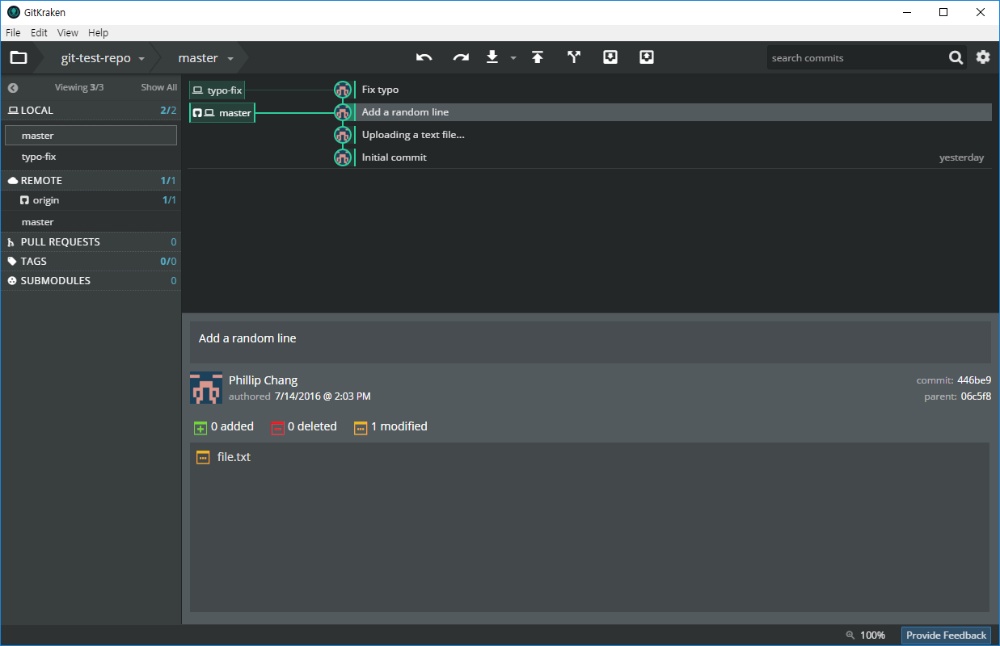

class: center, middle # 강의 3 (워크샵) : Git 사용 + 기타 질문 등. --- # Git은 무엇인가? 프로젝트의 여러 사람들이 같은 코드베이스를 가지고 작업할 때 사용. --- # Git의 특징 : Version Control Commit이라는 단위로 코드의 변화를 기록한다. Diff만 기록하기 때문에 매우 효율적이고 용량을 적게 차지한다. --- # Git의 특징 : Distributed 사용자와 클라이언트 모두 작업 파일을 갖고 있어, 만약에 서버에 자료가 다 날라간다고 해도 누군가가 Git 저장소를 가지고 있으면 안전하다. --- # Github https://github.com <img src="https://guides.github.com/introduction/getting-your-project-on-github/repository.png" width="800"> 계정이 없으면 최대한 빨리 만듭시다 # 쓰는 방법 - 터미널 - GUI 프로그램 - GitKraken (추천) - SourceTree (좋은 alternative) - GitHub Desktop (비추, Github 이외의 사이트에서 제대로 작동 안함) --- # 터미널 git 이전에 터미널을 써본 경험이 좀 있으면 좋음 기초 - https://try.github.io (인터랙티브 튜토리얼 - 기초) - http://rogerdudler.github.io/git-guide/ (아주 간략한 가이드) - 이외 구글에서 찾을 수 있는 가이드 등. 좀 더 깊숙히 배우고 싶다면... - http://learngitbranching.js.org/ (인터랙티브 튜토리얼 - 브랜칭) --- class: center # GitKraken https://www.gitkraken.com/ 프로그램 설치하고 이메일 가입하면 됩니다...  <img src="https://blog.axosoft.com/wp-content/uploads/2015/10/1-main-view.png" width="800"> Github 연동도 미리 해 놓읍시다 --- # GitKraken에서 새로운 Git 저장소 만들기 <img src="gitkraken-init.png" width="800"> --- # GitKraken에서 새로운 Git 저장소 만들기 --- # 여기서... gitignore는 무엇일까 프로젝트 폴더 안에 있는 파일 중 올리고 싶지 않은 파일들도 있을 거에요 예) - 편집기/IDE에서 생성되는 짜잘짜잘한 불필요한 파일들 - 빌드 파일들 (exe 등) - public으로 올리면 안 되는 유료 어셋 등등 이러한 파일들이 올라오는 것을 막기 위한 필터입니다 --- # .gitignore 들여다보기 ex. Visual Studio ``` **/bin **/obj ``` --- # .gitignore 들여다보기 ex. Unity ``` /[Ll]ibrary/ /[Tt]emp/ /[Oo]bj/ /[Bb]uild/ /[Bb]uilds/ /Assets/AssetStoreTools* # Autogenerated VS/MD solution and project files ExportedObj/ *.csproj *.unityproj *.sln *.suo *.tmp *.user *.userprefs *.pidb *.booproj *.svd # Unity3D generated meta files *.pidb.meta # Unity3D Generated File On Crash Reports sysinfo.txt # Builds *.apk *.unitypackage ``` --- # GitKraken에서 새로운 Git 저장소 만들기 --- # GitKraken에서 Clone하기 --- # GitKraken에서 원격 저장소 세팅하기 혹시나 "Select a remote branch to push/pull"라는 것이 뜨면 "origin/master"로 세팅해주면 됨 (원격 저장소(인터넷에 있는 저장소)의 이름) --- # git add 폴더 안에서 작업을 좀 한 다음.. 변경된 사항들을 add 해 줍니다 Terminal: `git add <filename>` --- # git commit add한 변경 사항들을 하나의 커밋으로 만듭니다. Terminal: `git commit` 혹은 `git commit -m "<your message>"` --- # git commit add한 변경 사항들을 하나의 커밋으로 만듭니다. Terminal: `git commit` 혹은 `git commit -m "<your message>"` --- # git push 지금까지 해온 커밋들을 인터넷에 있는 저장소에 올립니다. Terminal: ``git push origin master`` --- # 브랜칭 만약에 두 명 이상의 사람들이 같은 프로젝트에서 작업을 할 때... <img src="https://backlogtool.com/git-guide/en/img/post/stepup/capture_stepup1_5_6.png" width="800"> --- # git branch 코드를 작성하는 도중 버그가 있다는 것을 발견하고 버그 픽스를 위한 브랜치를 엽니다. (이렇게까지 해도 되진 않지만 일단 설명을 위해서..) --- # git branch --- # git branch  --- # git merge 만약에 이 사이에 누군가가 master 브랜치에 커밋을 했다고 합시다 --- # git merge 그러면 아까의 오타 고친 걸 master 브랜치에 적용시키기 위해 typo-fix 브랜치를 master 브랜치에다 merge해 봅시다 --- # merge failed! 워우... 머지가 안됬다고? 두 사람이 같은 파일에서 작업할 때 충돌(conflict)가 일어날 수 있음 다행히도 이럴때 우리는 수동으로 이 충돌을 해결할 수 있습니다... --- # merge resolve 텍스트 에디터에서 직접 편집할 수도 있지만.. Gitkraken은 좋은 머지 툴을 제공합니다 충돌이 난 부분마다 A 브랜치에서 가져올 지, B 브랜치에서 가져올 지, 아니면 둘 다 가져올 지 정하면 됩니다 --- # merge resolve 만약에 둘 다 마음에 안 든다면 (이런 경우는 거의 없겠지만): 텍스트 에디터로 수동으로 편집합시다. (나중에 유니티 씬파일 잘못 건드리면 하게 될수도 있습니다 ㅎㅎ) --- # merge resolve 해결이 됬으면 변경된 사항을 add/commit하고 push합니다. --- # merge resolve 끝! --- # git submodule (사실 지금은 모르고 있어서 상관 없어요) Git 저장소 안에 또 다른 Git 저장소들이 있을 때 관리하는 법 --- # 하노이 타워 사실 알고리즘 부분에 관하서는 설명을 안해서... 지금 하겠습니다 --- # 그럼 끝. ## 모두 수고하셨습니다!